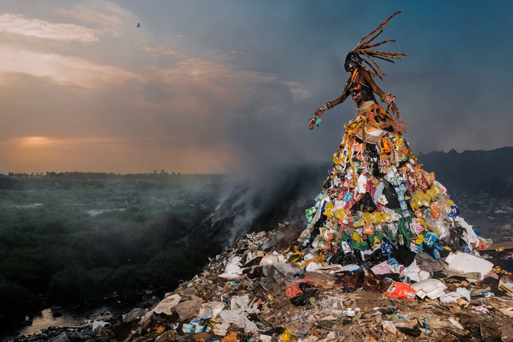
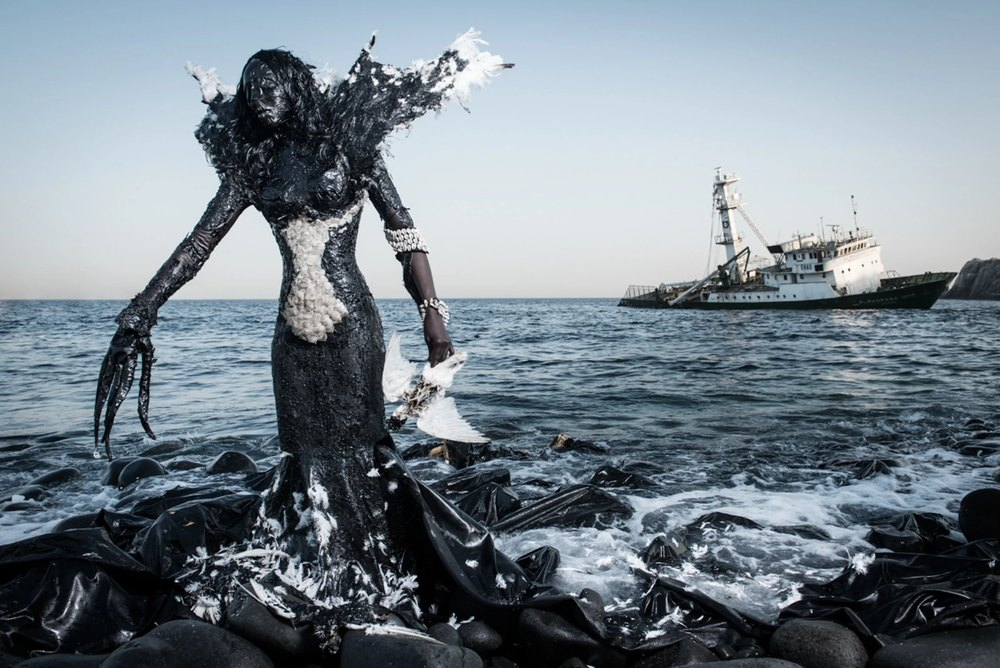
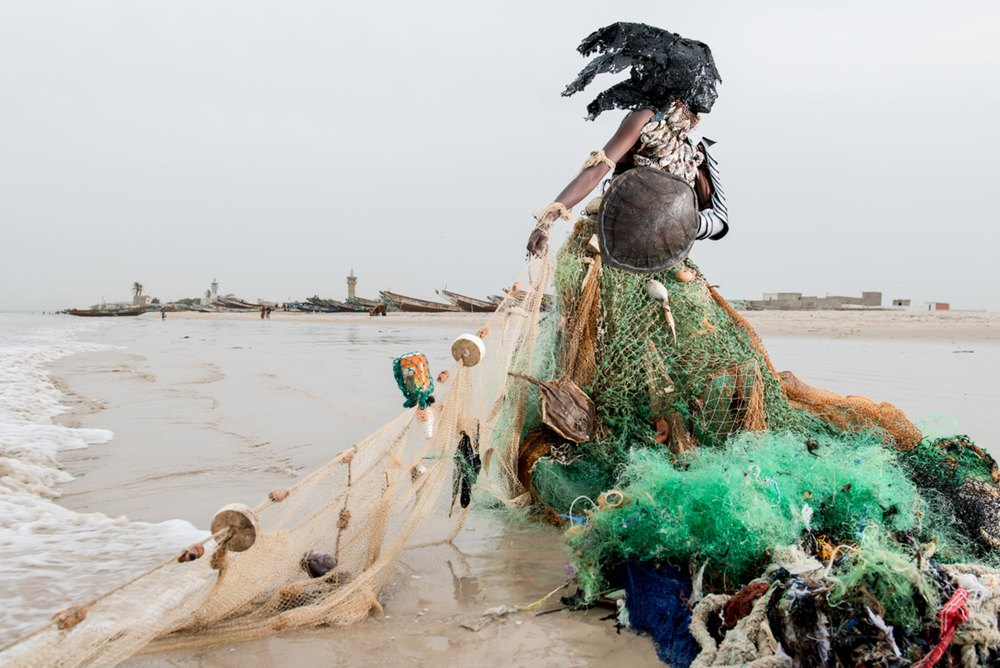
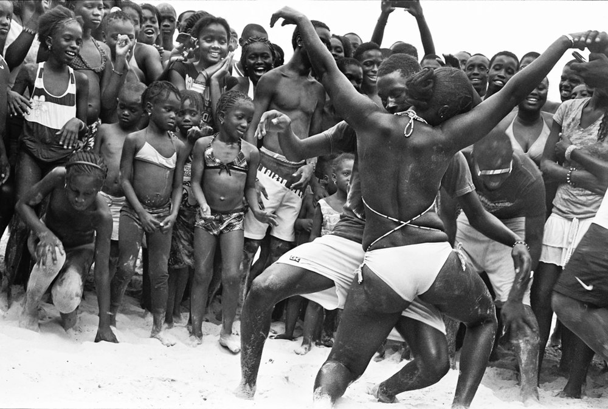
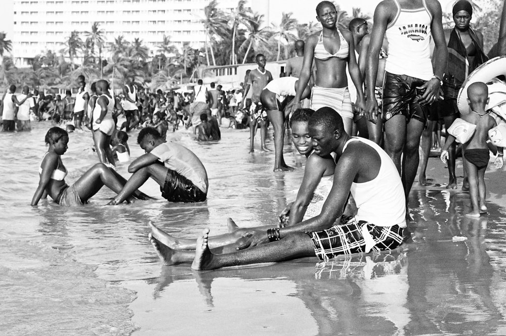
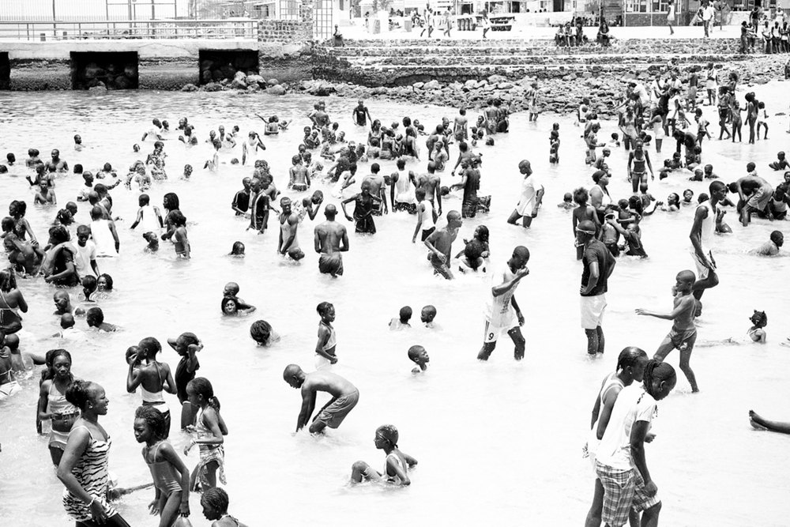

Shown at Øksnehallen
Fabrice Monteiro
Photographs on the environment and the history of West Africa, made with the craft of fashion photography.

Fabrice Monteiro was born in 1972 to a Beninese father and a Belgian mother, grew up in Benin and lives in Dakar. He worked as a model for ten years before he turned to photography, encouraged by the New York photographer Alfonse Pagano, whom he met in 2007.
Between photojournalism, fashion and portraiture, he builds staged scenes in which the history and the present of West Africa meet.
Text and series lines are draft. Images from his profile on commerceandculture.org, at 2,500 px (the exhibition folder has only small files). The works are untitled here: their titles, if they have them, to add. Website to find: he is now with MAGNIN-A, Paris.
The Prophecy
Made in 2013 with the costume designer Doulsy and the organisation Ecofund. Figures in costumes made from the waste found at each site stand in polluted places across Senegal, like the djinns of West African tradition: spirits that warn of what is being done to the land.



A Gorean Summer
Made in 2012 on Gorée, the island off Dakar remembered as a place of the Atlantic slave trade and visited today by tourists from all over the world. The series looks at what happens when memory and tourism meet in the same place.


